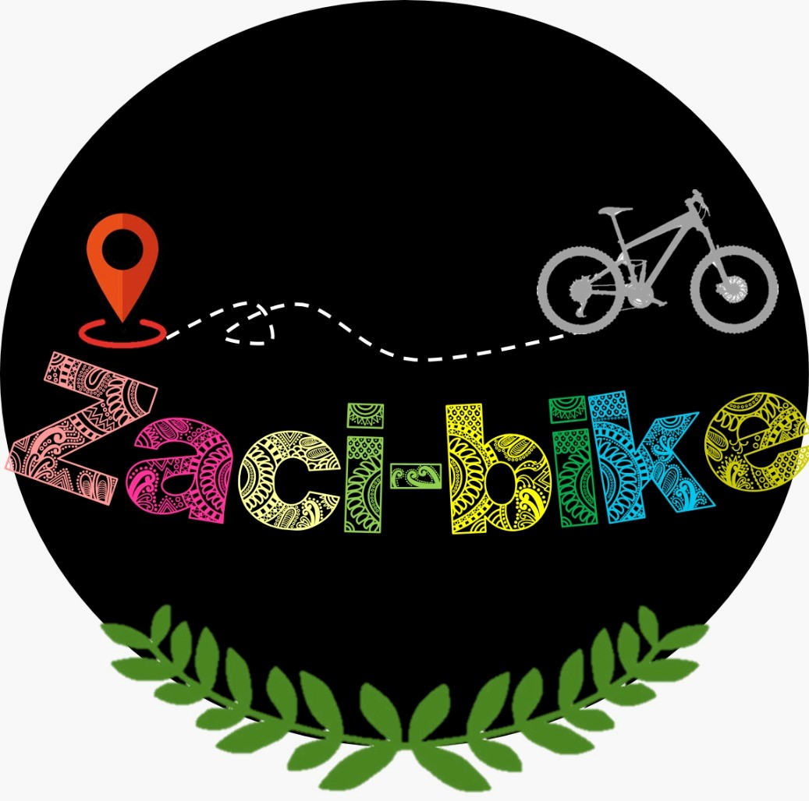
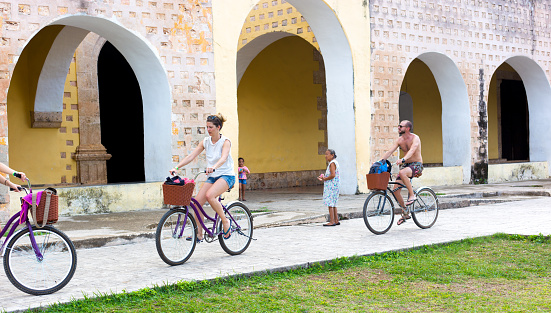
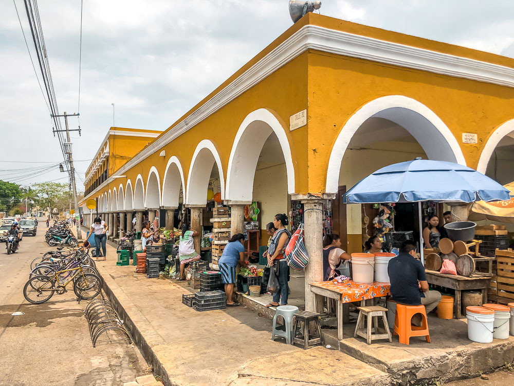
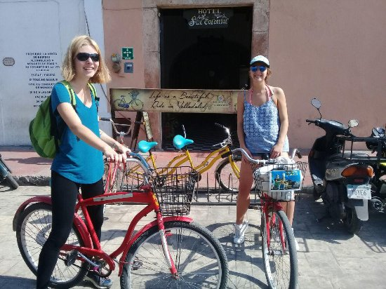
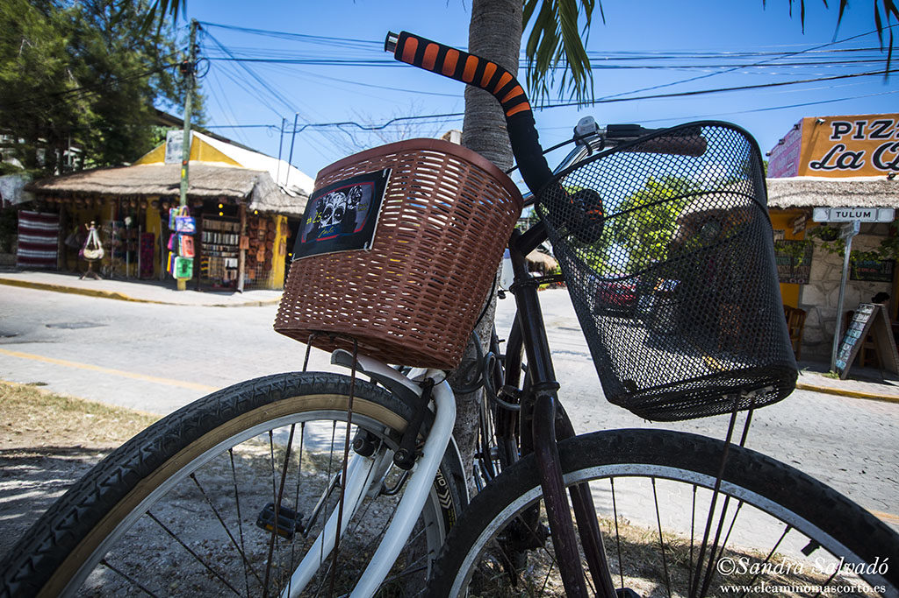
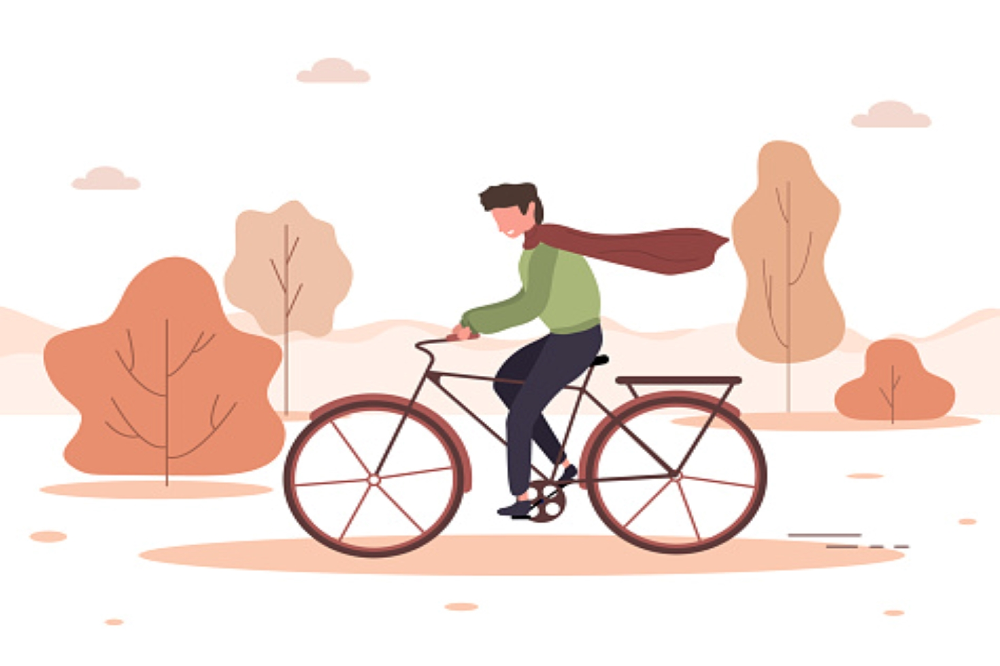
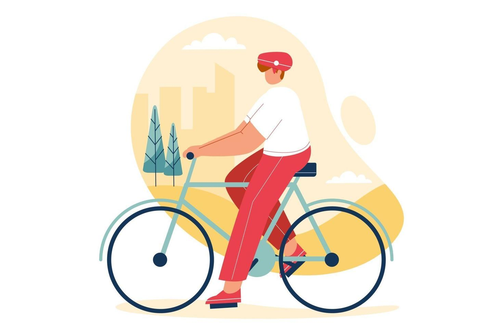
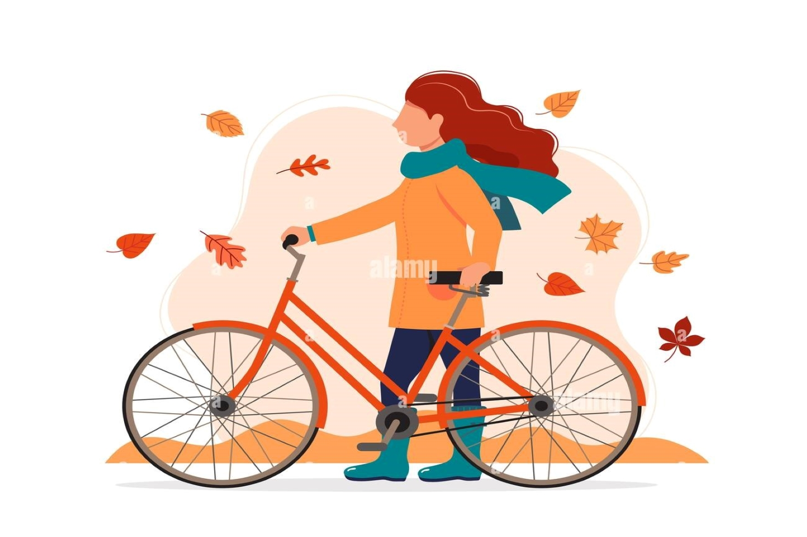

Nuestros servicios

1Tour “Cultura”
Consta de un circuito dentro de la localidad de Valladolid.
Visita a tres iglesias:
• Candelaria.
• San Servacio.
• San Bernardino.
Visita a dos museos:
• San Roque.
• San Bernardino.
2Tour de “Cenotes”
Consta de un circuito dentro y fuera de Valladolid.
Visita a 2 cenotes:
• Zací.
• Suytún.
3Tour de “Aventura”
• Consta de un circuito de aventura, entre Valladolid y Kanxoc.
• Finalizando en unas cabañas con alberca y un pequeño fast food.
Vive Nuevas Experiencias






VALORES

RESPONSABILIDAD.

VERACIDAD.
